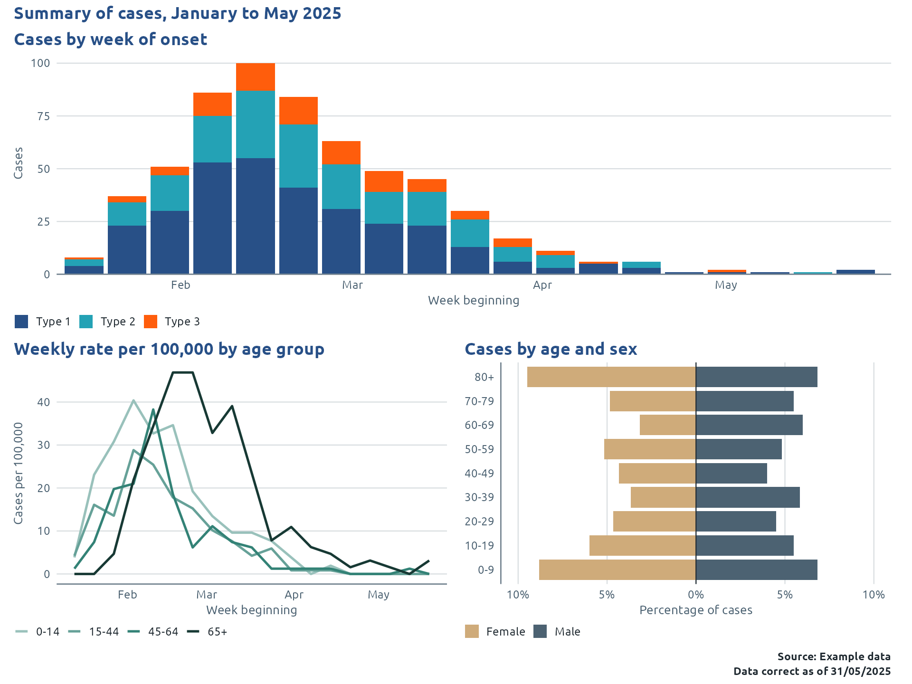
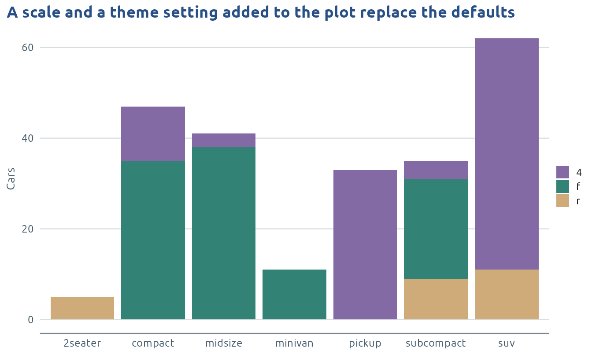

phwstyle applies the Public Health Wales (PHW) house style to R outputs. You write your analysis as usual, then add one function to style it. phwstyle styles results you have already calculated and doesn’t analyse anything. It is not an official PHW product.
Where next lists the guide for each kind of output.
Quick start
Load phwstyle and call use_phw_ggplot() once. Every
chart after that is in the PHW style, with no extra code on each
plot.
A worked example: one line list, five outputs
A surveillance summary usually shows the same handful of outputs: an epidemic curve, rates over time, an age and sex breakdown, a table of characteristics and a table of rates. Starting from one line list and a table of populations, each of these takes a few lines, and they come out in one style. The data here are made up and don’t describe real cases.
set.seed(2025)
n <- 600
pick <- function(values, prob) sample(values, n, replace = TRUE, prob = prob)
cases <- tibble(
age = floor(rbeta(n, 0.7, 0.7) * 90),
onset = as.Date("2025-01-06") + round(rgamma(n, 5, 0.12)) + if_else(age >= 65, 14, 0),
organism = pick(c("Type 1", "Type 2", "Type 3"), c(0.5, 0.35, 0.15)),
sex = pick(c("Female", "Male"), c(0.5, 0.5)),
area = pick(paste("Area", LETTERS[1:5]), c(0.3, 0.25, 0.2, 0.15, 0.1)),
outcome = pick(c("Outcome X", "Outcome Y"), c(0.85, 0.15))
) |>
mutate(
age_group = case_when(age < 15 ~ "0-14", age < 45 ~ "15-44", age < 65 ~ "45-64", TRUE ~ "65+"),
age_band = cut(age, c(seq(0, 80, 10), Inf), right = FALSE,
labels = c("0-9", "10-19", "20-29", "30-39", "40-49", "50-59", "60-69", "70-79", "80+"))
)
population <- tibble(age_group = c("0-14", "15-44", "45-64", "65+"),
population = c(52000, 118000, 81000, 64000))Three charts in one figure
phw_epicurve() and phw_pyramid() are
ready-made public health charts. The chart of weekly rates is ordinary
dplyr and ggplot2, and phw_arrange() puts the three
together under one title and source line.
Organisms take the default palette, age groups have an order so they get shades of one colour, and the pyramid’s two sides need only two quiet colours.
curve <- phw_epicurve(cases, onset, group = organism) +
labs(title = "Cases by week of onset", x = "Week beginning", y = "Cases")
weekly_rates <- cases |>
count(week = floor_date(onset, "week", week_start = 1), age_group, name = "cases") |>
complete(week, age_group, fill = list(cases = 0)) |>
left_join(population, by = "age_group") |>
mutate(rate = 100000 * cases / population)
rates_over_time <- ggplot(weekly_rates, aes(week, rate, colour = age_group)) +
geom_line(linewidth = 0.9) +
scale_colour_phw_d(palette = tail(phw_palettes$greens, 4)) +
labs(title = "Weekly rate per 100,000 by age group", x = "Week beginning", y = "Cases per 100,000")
pyramid <- phw_pyramid(cases, age_band, sex, percent = TRUE,
palette = phw_col("gold_465", "text_secondary")) +
labs(title = "Cases by age and sex", x = "Percentage of cases")
figure <- phw_arrange(curve, rates_over_time, pyramid, design = "AA\nBC", guides = "keep",
title = "Summary of cases, January to May 2025",
source = "Example data", date = as.Date("2025-05-31"))
figure
To keep a group the same colour in every chart, use a colour key.
A table of characteristics
phw_summary_table() counts each characteristic and works
out the percentages and the total column. phw_flextable()
renders the result for Word, PDF or HTML.
characteristics <- cases |>
phw_summary_table(vars = c(age_group, sex, area), by = outcome,
labels = list(age_group = "Age group", sex = "Sex", area = "Area",
outcome = "Outcome"))
phw_flextable(characteristics, caption = "Characteristics of cases by outcome",
source = "Example data")Outcome |
|||
|---|---|---|---|
Characteristic |
Outcome X (n = 520) |
Outcome Y (n = 80) |
Total (n = 600) |
Age group |
|||
0-14 |
108 (20.8%) |
12 (15.0%) |
120 (20.0%) |
15-44 |
155 (29.8%) |
24 (30.0%) |
179 (29.8%) |
45-64 |
99 (19.0%) |
17 (21.2%) |
116 (19.3%) |
65+ |
158 (30.4%) |
27 (33.8%) |
185 (30.8%) |
Sex |
|||
Female |
262 (50.4%) |
39 (48.8%) |
301 (50.2%) |
Male |
258 (49.6%) |
41 (51.2%) |
299 (49.8%) |
Area |
|||
Area A |
146 (28.1%) |
24 (30.0%) |
170 (28.3%) |
Area B |
135 (26.0%) |
19 (23.8%) |
154 (25.7%) |
Area C |
110 (21.2%) |
18 (22.5%) |
128 (21.3%) |
Area D |
83 (16.0%) |
12 (15.0%) |
95 (15.8%) |
Area E |
46 (8.8%) |
7 (8.8%) |
53 (8.8%) |
n (%) | |||
Source: Example data | |||
A table of rates
phw_rate_table() takes counts and populations and
returns rates per 100,000 with confidence intervals. It states how it
calculates them on its help page. The Tables
guide shows the other summary tables.
rates <- cases |>
count(age_group, name = "cases") |>
left_join(population, by = "age_group") |>
phw_rate_table(age_group, cases, population, labels = list(age_group = "Age group"))
phw_flextable(rates, caption = "Cases per 100,000 population by age group",
source = "Example data")Group |
Cases |
Population |
Rate per 100,000 |
95% CI |
|---|---|---|---|---|
Total |
600 |
315,000 |
190.5 |
175.5 to 206.3 |
Age group |
||||
0-14 |
120 |
52,000 |
230.8 |
191.3 to 275.9 |
15-44 |
179 |
118,000 |
151.7 |
130.3 to 175.6 |
45-64 |
116 |
81,000 |
143.2 |
118.3 to 171.8 |
65+ |
185 |
64,000 |
289.1 |
248.9 to 333.9 |
Confidence intervals use the exact Poisson method. | ||||
Source: Example data | ||||
Apart from the palettes in the figure, none of this code sets a
colour, a font, a border or a number format. Columns are given as in
dplyr, as unquoted names, c(a, b) or helpers such as
starts_with(). Strings work too.
The same results in any output
The figure and the tables are ordinary objects, so they go into a workbook or a slide:
# Excel: one sheet per table, with the same headings and number formats
phw_write_xlsx(list(Characteristics = characteristics, Rates = rates), "tables.xlsx")
# PowerPoint: one slide with the figure
phw_pptx() |>
phw_add_slide("Summary of cases", plot = figure, source = "Example data") |>
print(target = "summary.pptx")For a whole report, use
output: phwstyle::phw_word_document in an R Markdown
header. For Quarto, run use_phw_quarto() once and use
format: phw-docx (or phw-html,
phw-typst), then call use_phw_ggplot() in the
setup chunk.
Which function do I need?
| I want to | Use | More in |
|---|---|---|
| Style every chart in a script | use_phw_ggplot() |
Charts |
| Change the style of one chart |
theme_phw(), scale_fill_phw_d() and the
other PHW scales |
Charts |
| Draw an epidemic curve, population pyramid, funnel plot, forest plot or SPC chart |
phw_epicurve(), phw_pyramid(),
phw_funnel(), phw_forest(),
phw_spc()
|
Charts |
| Put a second measure on its own axis | phw_sec_axis() |
Charts |
| Add a source line, a date or a formatted number |
phw_caption(), phw_date(),
phw_number(), phw_percent()
|
Charts |
| Save a chart to send on its own |
phw_finalise(), phw_save()
|
Charts |
| Keep each group the same colour in every chart |
scale_fill_phw_d(key = "name"),
phw_colour_key()
|
Colours |
| Use colour-blind safe colours everywhere | use_phw_ggplot(palette = "accessible") |
Colours |
| Build a table of counts, rates or characteristics from raw data |
phw_summary_table(), phw_crosstab(),
phw_rate_table(), phw_risk_table(),
phw_group_table()
|
Tables |
| Style a table you built yourself like those | phw_as_summary() |
Tables |
| Render a table for Word, PDF or HTML |
phw_flextable(), phw_gt()
|
Tables |
| Make an interactive table or chart |
phw_reactable(), phw_datatable(),
phw_plotly()
|
Interactive |
| Draw a map of Welsh areas for a report | phw_map() |
Maps |
| Draw a map you build yourself, or an interactive map |
phw_boundaries(), theme_phw_map(),
phw_leaflet()
|
Maps |
| Build a Shiny app or a dashboard |
phw_page_navbar(), phw_bs_theme(),
use_phw_quarto()
|
Interactive |
| Write a whole report, slides or a dashboard |
phw_word_document() and friends,
use_phw_quarto()
|
Reports, slides and dashboards |
| Write tables to Excel, or slides to PowerPoint |
phw_write_xlsx(), phw_pptx()
|
Excel, PowerPoint and Word |
| Install the package, fonts and logos, or check what is installed |
phw_setup_check(), phw_install_fonts(),
phw_download_logos()
|
Installation and setup |
How the pieces fit together
phwstyle works at three levels. Something set at a wider level is already done for everything inside it, so you don’t repeat it lower down.
1. Once for a document, project or session. Each of these is a switch you set once.
| Set once | What it switches on | So don’t also add |
|---|---|---|
An R Markdown format: phw_html_document(),
phw_word_document(), phw_pdf_document()
|
The page design (fonts, headings, header band, Word or LaTeX
template, figure sizes), and it calls use_phw_ggplot() and
use_phw_flextable() for you |
use_phw_ggplot() or use_phw_flextable() in
the document |
A Quarto format: phw-html, phw-docx,
phw-typst and the rest, after
use_phw_quarto()
|
The page design only. A Quarto extension can’t run R code, so call
use_phw_ggplot() and use_phw_flextable()
yourself in the setup chunk |
|
use_phw_ggplot() |
For every ggplot: theme_phw(), the PHW palette for
groups, PHW blues for numbers, navy for bars, lines and points that have
no colour of their own, the PHW font in text layers, and the same for
extension geoms |
+ theme_phw() or + scale_*_phw_*() on each
plot, or phw_style_extensions()
|
use_phw_flextable() |
PHW style for every flextable you make with flextable’s own functions |
phw_flextable_theme() on each table |
use_phw_gtsummary() |
PHW style for every gtsummary table. The document formats don’t call this one, so add it when you use gtsummary | |
The palette switch: palette = "accessible" in a format
or in use_phw_ggplot(), or
options(phwstyle.palette = )
|
Which colours groups get in every chart, table and widget |
palette = in each function |
options(phwstyle.font = ) |
The font everywhere | |
phw_key_file() |
Where colour keys are kept between sessions. It colours nothing on
its own: a key is used when you give a function
key = "name"
|
2. For one chart. theme_phw() and
theme_phw_map(), the colour and fill scales
(scale_fill_phw_d(), scale_colour_phw_c() and
so on), scale_shape_phw(),
scale_linetype_phw() and phw_sec_axis() are
added to a plot with +, and affect only that plot.
3. For one kind of chart or output. The ready-made
charts (phw_epicurve(), phw_pyramid(),
phw_funnel(), phw_forest(),
phw_spc()) and phw_map() bring their own theme
and colours, so they need no setup. So do the functions that make a
whole output: phw_flextable(), phw_gt(),
phw_reactable(), phw_datatable(),
phw_plotly(), phw_leaflet(),
phw_write_xlsx() and phw_add_slide(). The
setup functions at level 1 don’t reach interactive widgets, so use these
each time (phw_plotly(p), not
plotly::ggplotly(p)). phw_finalise() and
phw_save() are for a chart that leaves the report.
Do I still need to add this?
“After setup” means inside a phw_*_document(), or after
use_phw_ggplot() in a script or Quarto document.
| You are about to add | Covered after setup? | Add it when |
|---|---|---|
+ theme_phw() |
Yes | You want different settings for this plot,
e.g. theme_phw(grid = "x") or
legend = "right"
|
+ scale_fill_phw_d() or
scale_colour_phw_d()
|
Yes: groups get the PHW palette | You want a colour key, another palette,
pinned values, a legend name, or “Other” and
“Unknown” drawn in grey |
+ scale_fill_phw_c() or
scale_colour_phw_c()
|
Yes: numbers get PHW blues | You want another palette such as "teals", or the full
range including the palest blue |
scale_*_phw_b() (binned) or
scale_*_phw_div() (diverging) |
No | The data need them, e.g. a choropleth in bands |
scale_shape_phw(),
scale_linetype_phw()
|
No | Groups should differ by more than colour |
theme_phw_map() |
No | The plot is a map you draw yourself. phw_map() applies
it for you |
labs(caption = phw_caption(...)) |
No | The chart shows its source |
phw_finalise() |
No | The chart is used outside a branded report |
In a plain script with no setup, nothing is covered. Call
use_phw_ggplot() at the top, which gives the same result on
ggplot2 3.5 and 4.0. Without it, + theme_phw() alone also
colours groups on ggplot2 4.0, but on 3.5 it styles only the text,
gridlines and legend.
Your changes win
Anything you add to a plot takes priority over the session and document defaults. The house style is a starting point.
- A scale added to a plot replaces the PHW default for that aesthetic, whether it is a PHW scale with other arguments, a ggplot2 scale or one from another package.
-
+ theme(...), or the same settings passed totheme_phw(...), override the theme.theme_phw()is a complete theme, so put your own+ theme()after it. -
fill =orcolour =inside a geom overrides the default navy. - A
palette =given to one function overrides the palette switch for it. - The ready-made charts and
phw_map()already have a fill or colour scale, so adding another replaces theirs and ggplot2 warns “Scale for fill is already present”. Use theirpaletteandkeyarguments instead.
ggplot(mpg, aes(class, fill = drv)) +
geom_bar() +
scale_fill_manual(values = c("4" = "#846AA4", f = "#338276", r = "#CFAB7A")) +
theme(legend.position = "right") +
labs(title = "A scale and a theme setting added to the plot replace the defaults",
x = NULL, y = "Cars")
Wording
phwstyle writes few words of its own, and each one can be replaced
through an argument, so a report in another language needs no change to
the package.
phw_caption("Example data", source_prefix = "Data: ", date_prefix = "As of ")
is one example. The Charts
guide lists the arguments for forest, funnel, SPC, epicurve and slide
labels.
Where next
Each guide covers one kind of output and runs on made-up data. The gallery shows every kind of output with the functions behind it.
- Charts and Colours and accessibility
- Tables and Maps and boundaries
- Interactive charts, tables and apps
- Reports, slides and dashboards
- Excel, PowerPoint and Word
- Installation and setup, including fonts, logos and options